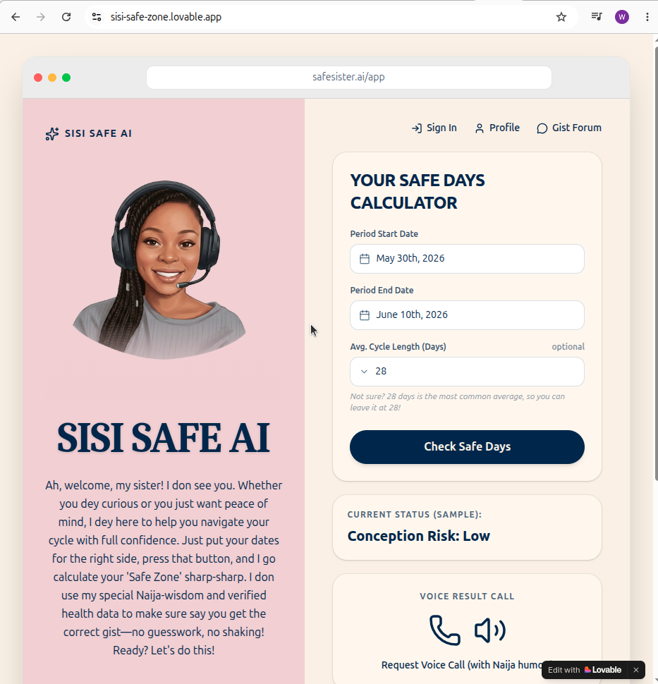
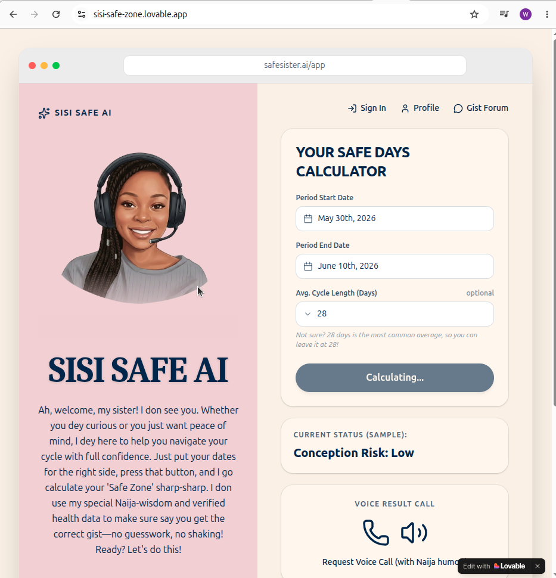
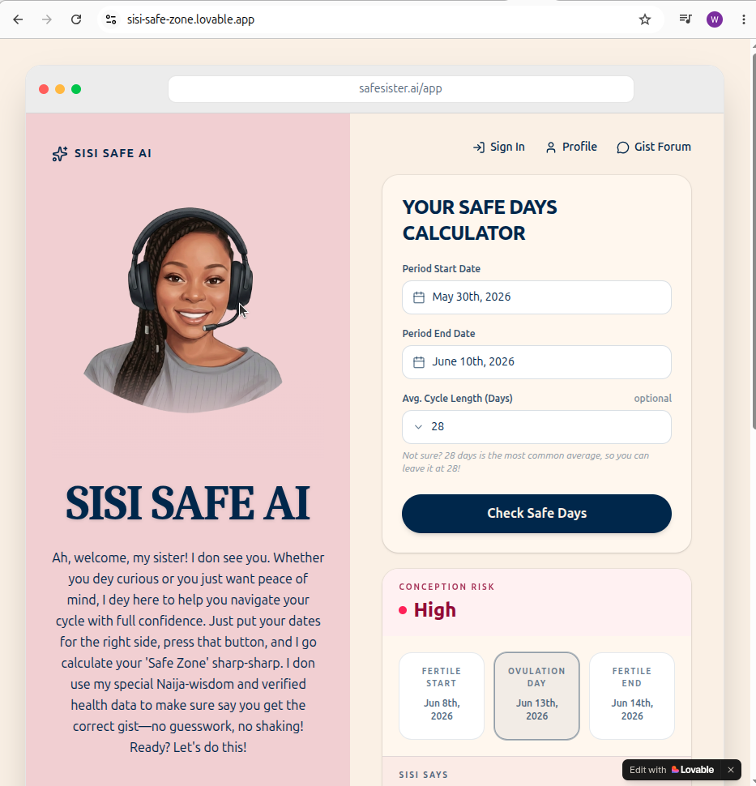
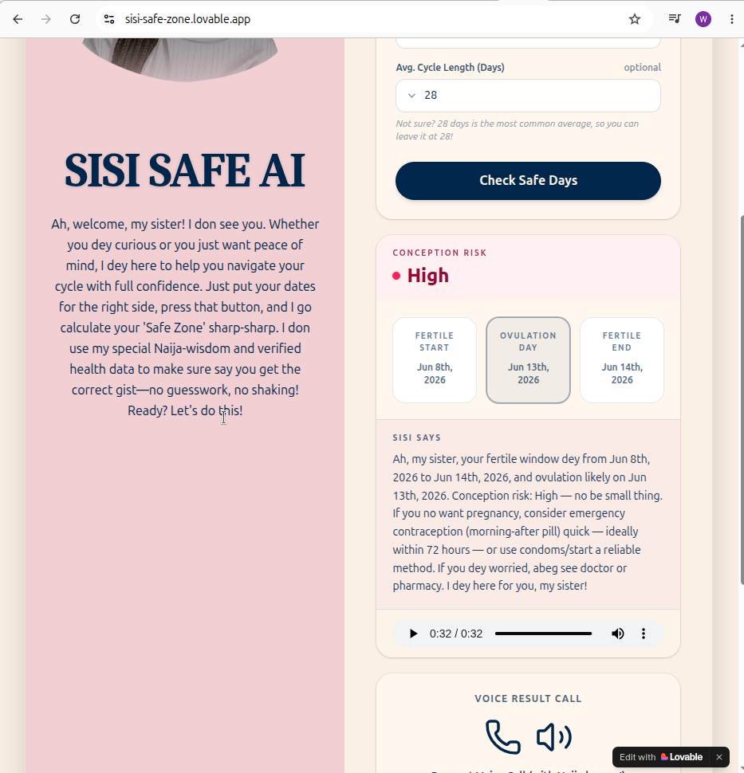
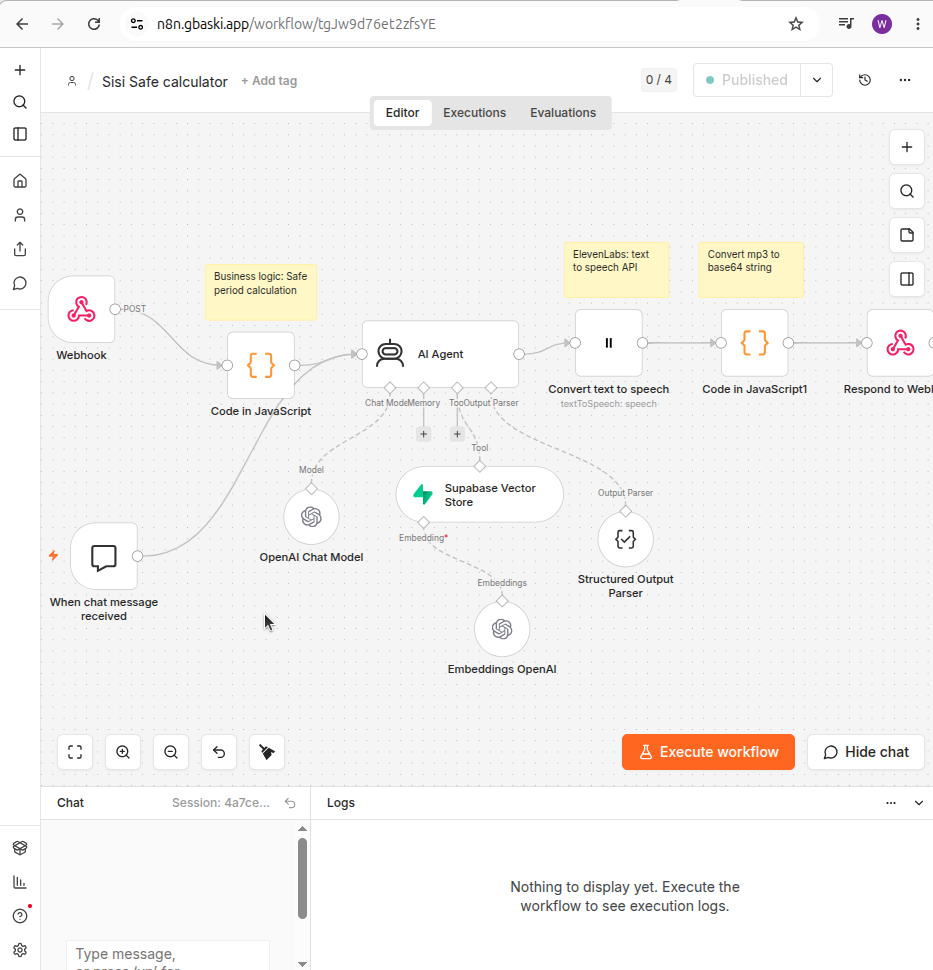
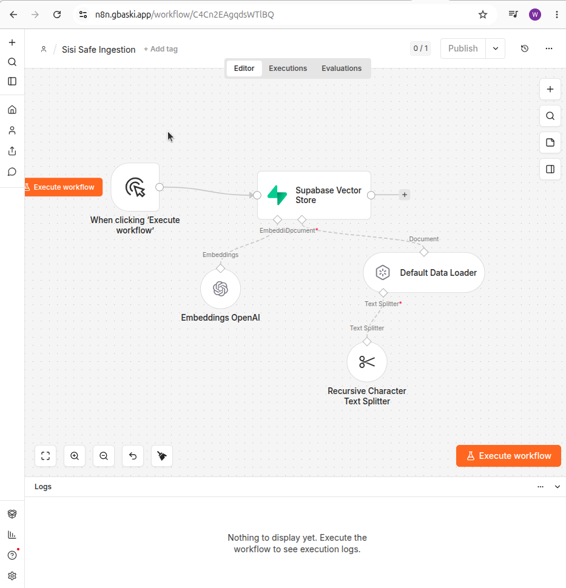

Sisi Safe AI
Sisi Safe AI helps women and couples identify safer periods for unprotected sex without contraceptives by providing personalized fertility and cycle guidance.
Overview
Sisi Safe AI is an AI-powered fertility and menstrual cycle assistant designed to help women and couples better understand fertility patterns, ovulation windows, and safer periods for unprotected sex without contraceptives.
Using personalized cycle information and evidence-based fertility awareness methods, Sisi Safe AI provides easy-to-understand guidance that helps users make informed decisions about family planning, conception timing, and menstrual health.
The platform delivers supportive, culturally relevant guidance tailored to African and Nigerian users through a conversational AI experience — embodied by Sisi, the warm and approachable "Big Sister" persona.
Problem Statement
Many women and couples lack easy access to reliable fertility awareness information and personalized menstrual cycle guidance. Existing tools often provide generic calendar predictions without explaining the reasoning behind fertile and less fertile periods.
As a result, users struggle to:
- Understand their menstrual cycles
- Identify ovulation and fertile windows
- Estimate lower-risk periods for unprotected intercourse
- Track cycle irregularities and fertility patterns
- Access reproductive guidance in a conversational and relatable manner
Solution
Sisi Safe AI combines cycle tracking, fertility-awareness principles, and AI-powered guidance to help users:
- Understand menstrual cycle phases
- Predict ovulation windows
- Identify fertile and less fertile days
- Receive personalized cycle insights
- Learn fertility concepts through natural conversations
- Make informed family-planning decisions
The system provides educational guidance and fertility estimates while encouraging users to consult healthcare professionals when necessary.
Target Users
Women
Women seeking personalized fertility awareness guidance, cycle tracking support, and menstrual health education.
Couples
Couples who want to plan for pregnancy, understand fertility timing, identify lower-risk periods, and improve reproductive health awareness.
Project Architecture
Frontend
A user-friendly conversational interface built with Lovable, allowing users to input menstrual cycle information and receive personalized fertility guidance.
Orchestration Layer
n8n serves as the workflow engine responsible for:
- Managing user interactions
- Processing cycle data
- Coordinating AI responses
- Integrating external services
Knowledge Base
A vector database powered by Supabase and pgvector stores curated fertility-awareness and reproductive health content, serving as the system's trusted knowledge source.
AI Engine
OpenAI models power:
- Natural language understanding
- Personalized fertility guidance
- Educational explanations
- Context-aware conversations
A custom system prompt ensures Sisi maintains a supportive, approachable "Big Sister" personality while remaining evidence-based.
Technical Workflow
User Input
Users provide last menstrual period date, average cycle length, period duration, cycle irregularity information, and fertility-related questions.
Cycle Analysis
The workflow analyzes cycle information to estimate menstrual phase, ovulation window, fertile days, and lower-fertility periods.
Knowledge Retrieval
The n8n agent queries the Supabase vector database to retrieve relevant fertility and reproductive health information.
AI Response Generation
The AI combines user cycle data, fertility calculations, and retrieved medical context to generate personalized, easy-to-understand guidance.
Response Delivery
Users receive fertility window estimates, safe-period guidance, cycle insights, educational explanations, and appropriate medical disclaimers.
Key Features
Personalized Fertility Guidance
Cycle-specific insights based on user-entered menstrual information rather than generic calendar estimates.
Fertile Window Prediction
Helps users understand when ovulation is likely to occur and identifies days with higher fertility probability.
Lower-Risk Period Identification
Highlights days that may present a lower likelihood of pregnancy based on fertility-awareness principles.
Educational Fertility Coaching
Explains ovulation, menstrual phases, fertility timing, and cycle irregularities in simple, conversational language.
Context-Aware AI (RAG)
Uses Retrieval-Augmented Generation to provide responses grounded in curated fertility and reproductive health information.
Cultural Adaptation
Communicates in a friendly, supportive style that resonates with Nigerian and African users while maintaining accuracy.
Scalable Knowledge Base
New fertility resources and educational materials can be added without retraining the AI model.
Voice-Assisted Guidance
ElevenLabs text-to-speech delivers fertility guidance in a warm, conversational voice directly in the app.
Product Demo
Watch the Sisi Safe Calculator in action — from entering cycle dates to receiving personalized fertility guidance with voice playback.
Application & Workflows
User Interface




n8n Orchestration


Voice Integration
To improve accessibility and create a more engaging user experience, Sisi Safe AI supports voice responses. Users can listen to fertility guidance and cycle explanations delivered in a warm, conversational voice.
Frontend Implementation
The Lovable frontend receives:
- AI text response
- Base64 audio payload
- Audio MIME type
The application automatically renders an HTML5 audio player, allowing users to listen to fertility guidance directly within the conversation interface.
Safety & Medical Disclaimer
Important: Sisi Safe AI provides educational fertility-awareness guidance and cycle-based estimates.
Predictions are not guaranteed methods of contraception and should not be considered medical advice. Fertility patterns vary among individuals, especially for users with irregular cycles, hormonal conditions, or underlying health concerns.
Users are encouraged to consult qualified healthcare professionals for medical diagnosis, treatment, or family-planning decisions.
Troubleshooting & Maintenance
Error Handling
Structured output validation ensures consistent communication between backend services and frontend applications.
Database Optimization
The vector search infrastructure uses indexed similarity searches for efficient retrieval from fertility and reproductive health knowledge collections.
Monitoring
Workflow execution, AI responses, and external integrations are monitored through n8n to ensure reliability and performance.